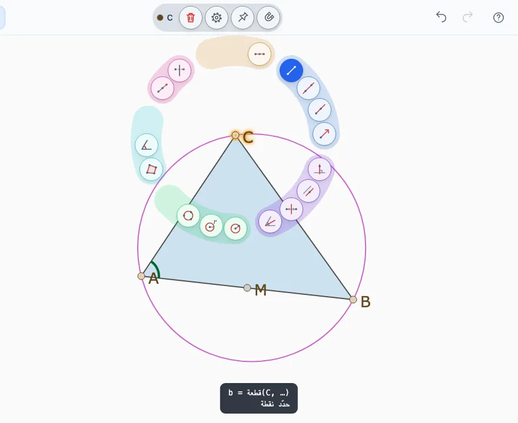

الإنشاء بالإيماءات
لمس الشكل
| المكان الملموس | النتيجة |
|---|---|
| مكان فارغ | نقطة حرة (على الأرضية z = 0 في الأبعاد الثلاثة) |
| قرب تقاطع | تقاطع العنصرين اللذين يتوهجان عند مرور المؤشر (على أقل من 24 px) |
| عنصر | تحديده وحلقة أدواته |
| مكان فارغ والحلقة مفتوحة | إغلاق الحلقة دون إنشاء نقطة |
| عنصر واللوحة مفتوحة | تحديده دون حلقة: تعرض لوحة الأدوات أدواته |
النص والتعبير والمنزلقة تُحدَّد فقط: ليست لها حلقة.
حلقة الأدوات

لا تعرض الحلقة إلا الأدوات القابلة للتطبيق على العنصر الملموس. لكل أداة دائمًا المكان نفسه؛ والأداة غير القابلة للتطبيق تترك مكانها فارغًا. العائلات، في اتجاه عقارب الساعة بدءًا من الأعلى:
| العائلة | الأدوات |
|---|---|
| نقاط | نقطة على عنصر، تقاطع، منتصف أو مركز |
| مستقيمات | قطعة مستقيمة، مستقيم، شعاع، متجه |
| إنشاءات | عمودي، موازٍ، منصف عمودي، منصف زاوية |
| دوائر | مركز ونقطة، مركز ونصف قطر، ثلاث نقاط، كرة (الأبعاد الثلاثة) |
| مضلعات، زوايا، محال هندسية | مضلع، زاوية، محل هندسي |
| تحويلات | التماثل المركزي والمحوري |
مرور المؤشر على أداة يعرض في الإرشاد السطر الذي ستكتبه والوسيط
المنتظر: b = قطعة(C, …)، «حدّد نقطة». أما الإجراءات
على العنصر نفسه (حذف، ضبط…) ففي
منطقة السياق
من الشريط.
تحديد الوسائط
بعد اختيار الأداة، تتبع معاينةُ العنصر المؤشرَ وتتوهج العناصر المقبولة عند مرور المؤشر. وحيث تُنتظر نقطة، تحدد حسب الرغبة نقطة موجودة، أو عنصرًا (فتُنشأ نقطة على عنصر)، أو تقاطعًا (فيُنشأ تقاطع)، أو مكانًا فارغًا (فتُنشأ نقطة حرة).
- مضلع: الرؤوس، ثم الأول مرة أخرى. وسحب مضلع رؤوسه نقاط حرة ينقله كله، إلا إذا كان ثابتًا (عنصر ثابت في الخصائص).
- دائرة (مركز ونصف قطر): تُنشأ بنقرة، ونصف قطرها نحو 150 px مقرّب إلى رقمين؛ وسحب الدائرة يغيّر نصف القطر.
- محل هندسي: يُقترح على نقطة تتعلق بنقطة على عنصر؛ ويُنشأ بنقرة.
- الزاوية و منصف الزاوية: نقطة من الضلع الأول، الرأس، نقطة من الضلع الثاني.
حالات خاصة
- عناصر متراكبة: تعرض قائمة سطر كل منها؛ ومرور المؤشر عليه يُبرز العنصر. للنقطة الأولوية دائمًا، والتقاطع يعطي نقطة التقاطع مباشرة.
- بالإصبع: أثناء استعمال أداة، يعرض الإصبع الضاغط المعاينة دون تحريك أي شيء، ويحدّد عند رفعه. ويمكن الضغط على الأيقونة والانزلاق حتى الهدف بإيماءة واحدة.
- حافة النافذة: تنزاح الحلقة لتظهر كاملة، موصولة بالعنصر بخط منقط؛ وتتبع العنصر إذا تحرك الشكل.
- ترك الأداة: Esc أو ✕ في الإرشاد.
- التحريك: أثناء استعمال أداة، السحب يصوّب؛ والزر الأيمن يحرك دائمًا العناصر والعرض.